Explore Apache Zeppelin UI
Main home
The first time you connect to Zeppelin, you'll land at the main page similar to the below screen capture.
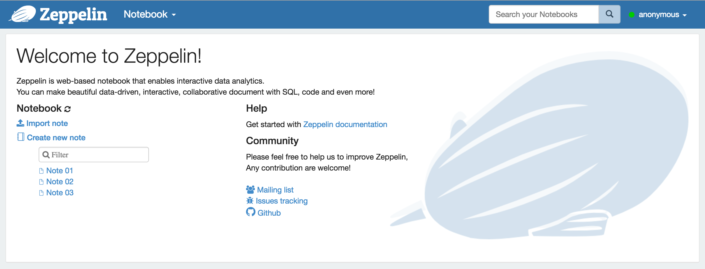
On the left of the page are listed all existing notes. Those notes are stored by default in the $ZEPPELIN_HOME/notebook folder.
You can filter them by name using the input text form. You can also create a new note, refresh the list of existing notes
(in case you manually copy them into the $ZEPPELIN_HOME/notebook folder) and import a note.
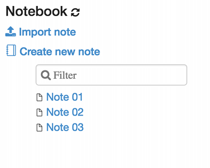
When clicking on Import Note link, a new dialog open. From there you can import your note from local disk or from a remote location
if you provide the URL.
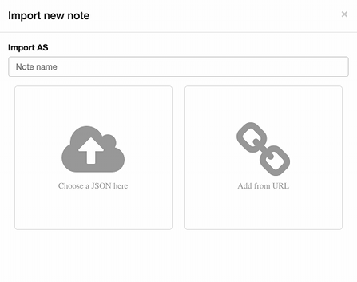
By default, the name of the imported note is the same as the original note but you can override it by providing a new name.
Menus
Notebook
The Notebook menu proposes almost the same features as the note management section in the home page. From the drop-down menu you can:
- Open a selected note
- Filter node by name
- Create a new note
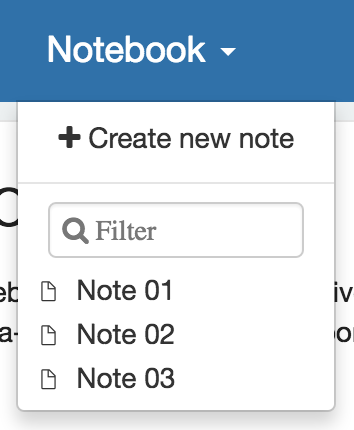
Settings
This menu gives you access to settings and displays information about Zeppelin. User name is set to anonymous if you use default shiro configuration. If you want to set up authentification, see Shiro authentication.
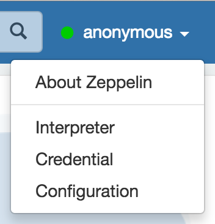
About Zeppelin
You can check Zeppelin version in this menu.
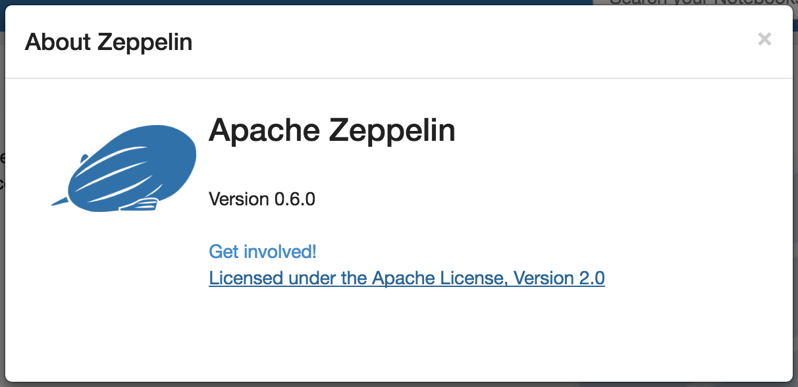
Interpreter
In this menu you can:
- Configure existing interpreter instance
- Add/remove interpreter instances
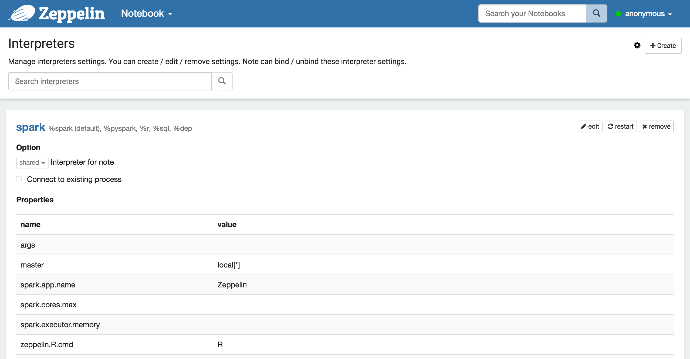
Credential
This menu allows you to save credentials for data sources which are passed to interpreters.
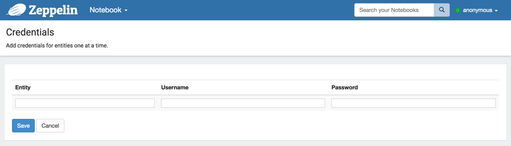
Configuration
This menu displays all the Zeppelin configuration that are set in the config file $ZEPPELIN_HOME/conf/zeppelin-site.xml
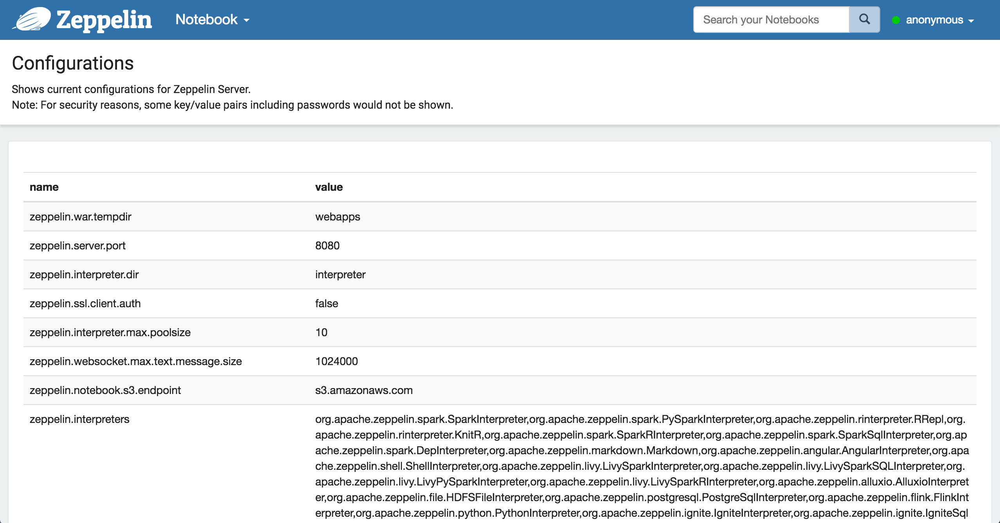
Note Layout
Each Zeppelin note is composed of 1 .. N paragraphs. The note can be viewed as a paragraph container.
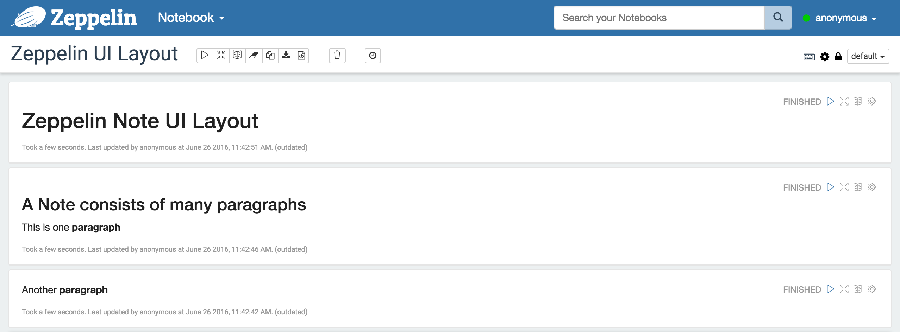
Paragraph
Each paragraph consists of 2 sections: code section where you put your source code and result section where you can see the result of the code execution.
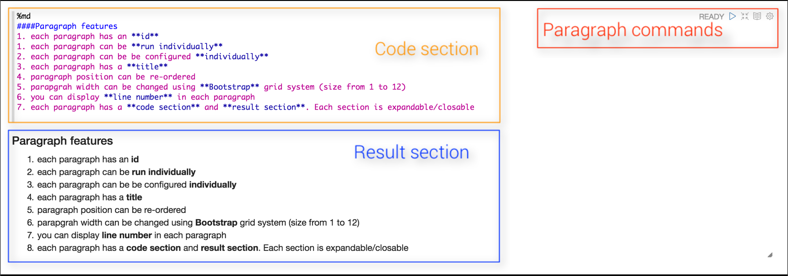
On the top-right corner of each paragraph there are some commands to:
- execute the paragraph code
- hide/show
code section - hide/show
result section - configure the paragraph
To configure the paragraph, just click on the gear icon:
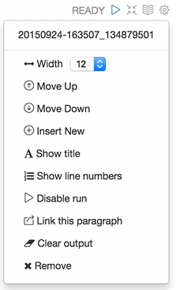
From this dialog, you can (in descending order):
- find the paragraph id ( 20150924-163507_134879501 )
- control paragraph width. Since Zeppelin is using the grid system of Twitter Bootstrap, each paragraph width can be changed from 1 to 12
- move the paragraph 1 level up
- move the paragraph 1 level down
- create a new paragraph
- change paragraph title
- show/hide line number in the
code section - disable the run button for this paragraph
- export the current paragraph as an iframe and open the iframe in a new window
- clear the
result section - delete the current paragraph
Note toolbar
At the top of the note, you can find a toolbar which exposes command buttons as well as configuration, security and display options.
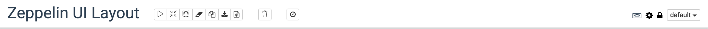
On the far right is displayed the note name, just click on it to reveal the input form and update it.
In the middle of the toolbar you can find the command buttons:
- execute all the paragraphs sequentially, in their display order
- hide/show
code sectionof all paragraphs - hide/show
result sectionof all paragraphs - clear the
result sectionof all paragraphs - clone the current note
- export the current note to a JSON file. _Please note that the
code sectionandresult sectionof all paragraphs will be exported. If you have heavy data in theresult sectionof some paragraphs, it is recommended to clean them before exporting - commit the current node content
- delete the note
- schedule the execution of all paragraph using a CRON syntax
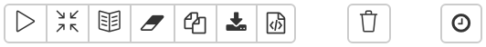
On the right of the note tool bar you can find configuration icons:
- display all the keyboard shorcuts
- configure the interpreters binding to the current note
- configure the note permissions
- switch the node display mode between
default,simpleandreport
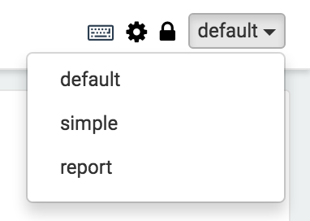